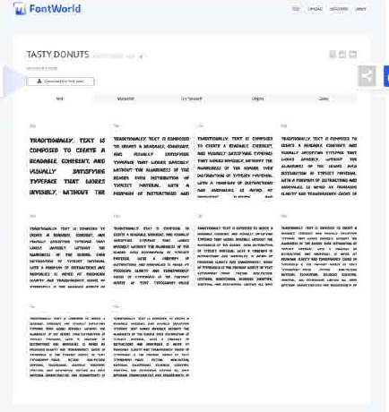
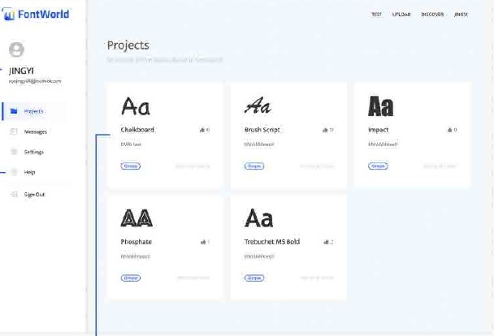

03 / WEB DESIGN & DEVELOPMENT · 2022
FontWorld
A web platform for type designers to inspect fonts, experiment with their appearance and exchange feedback.

- Context
- Web design and development project
- Practice
- Interface design, web implementation and iterative testing
- Tools & methods
- HTML · CSS · JavaScript · PHP / Fat-Free Framework
The question
How can type designers move more easily between testing a font and discussing it with others?
FontWorld supports two connected activities: inspecting a font in detail and sharing it for feedback. The original project includes requirements analysis, information architecture, interface design, front-end and back-end development, and documented testing iterations.
01 / The approach
Two paths through the product
The Test area lets designers inspect their fonts. Upload and Discover support sharing and exploring work, while personal pages organise projects and messages. Separating inspection from publication helps explain why the product has two different upload contexts.
02 / The approach
Making type easier to inspect
Font review includes text samples, editable previews, colour controls, glyphs and font data. The documented website also includes search, font details, comments and saved or liked fonts.
03 / The approach
Turning feedback into decisions
Feedback led to a more flexible colour picker with RGB, HSL and HEX controls; glyph-name and Unicode information on hover; clearer explanations of Test versus Upload; direct navigation from font previews; and more recognisable type categories for filtering.
In motion
Watch the project.
The film loads from YouTube when you press play. You can also use the direct link above.


What this project contributes
Part of a continuing practice.
A developed website demonstration, supported by user-flow diagrams and recorded interface iterations. The original server address is treated as an archive reference; the film is the project demonstration.